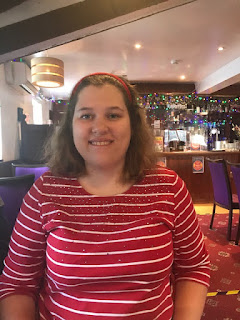

In the Thatcher room at Portcullis House, Westminster at a cross party meeting of MPs lobbying for a new right.
 |
| This lovely young woman is 27 yet her disabilities are such that she is at the level of a toddler. Should she be restricted to interaction with her mother behind a perspex screen? |
In fact, it’s such an old and basic human need that it’s astounding that it must be lobbied for. We are asking for the legal right for patients, residents or service users in the health and care system to maintain their closest personal relationships and be supported, in time of need, by someone who loves them.
And it's not 'them' - it could just as easily be me, or you.
Imagine that you're living with some
disability, impairment or trauma which means you can’t manage the system for
yourself. You need your cognitive guide-dog, your back-up brain - your spouse, partner, dearest friend, child, parent, sibling. The person who you have chosen and you trust. The person who knows you best.
Nurses, care-workers, doctors and therapists have their
professional skills and a responsibility to do their best for you. But if you
can’t understand what they are doing and why; if you’re not sure where you are
or why you’re there; if you can’t ask the professionals these questions and understand
or remember the answers – you’re unlikely to thrive. Similarly, if you are
living within the system in a state of dependence and vulnerability, possibly
in a collective environment that you’ve not chosen for yourself, then you have
an additional need to know that there is someone to whom you are always special,
who knows and cares particularly for you. Someone who, at some deep level,
keeps you safe.
I am not now talking only about people with dementia or
learning disability or frailty or autism or head injury or strokes or MS or
epilepsy or the whole range of extraordinarily disabling syndromes and
conditions that I never previously knew about. I’m not only talking about
people in care homes or hospitals or mental health units or rehab units or
supported living or extra care or community hospitals or GP surgeries or specialist
clinics or A&E. I am talking about anyone anywhere in the health and care
system who cannot advocate for themselves or who cannot assume that their choices
will be respected, or their consent properly obtained.
These people now need the statutory right to a #care
supporter. We've found a parliamentary draftsman to express this for us in legal language. We know that the Secretary of State has the power to insert this in the Health and Care Act currently going through Parliament.
It's possible to argue that the right's already there. There’s the Equality Act, the
Mental Capacity Act, the Care Act, the Human Rights Act. There are powers of
attorney, guardians, next of kin. There’s Government guidance on Essential Care
Givers in care homes, there are John’s Campaign pledges in hospitals. There’s
the NHS Constitution, which no-one remembers. Yet nothing has worked reliably – except sometimes for the people whose relatives fight the hardest. Or those
who are lucky enough to meet the special health and care professionals who have
the imagination, humanity and the common sense to put themselves into the
position of their patients, residents, service users and who know what magic ingredient will
give them the best chance to thrive.
This didn’t happen for Riya who suffered a life-threatening stroke but
didn’t speak or understand English. She spent almost a month in a specialist
hospital with just a single video call to her family ‘allowed’ each day. The
staff said she responded to ‘commands’ and that, if they needed any information,
they’d get an interpreter. Her family said that they believed she would do
better if they could speak to her, touch her, interpret for her, help her eat.
It took four weeks of argument and a chief nurse’s intervention before their
view prevailed. What a waste of recovery time.
The system didn’t work for Daniel who was living with early
onset dementia. He was taken into a specialist mental hospital. His wife, Emma, writes; “They told me
he was constantly looking for me. He became very agitated and aggressive with
staff resulting in him spending over 100 hours in a seclusion room on 11
occasions. He developed covid, cellulitis in his legs, wouldn’t sleep in his
bed, had seizure, allergic reactions, 2 bad falls to his head. Resulting in 4
trips to A&E. When he left to go into a nursing home in May he was doubly
incontinent, couldn’t feed himself, lost his speech, and bent forward and poor
mobility and required 24 hour 1 to 1 care. At a best interest meeting I was denied the
right to bring him home.”
When I ‘met’ Emma, Daniel was back in an
acute hospital, refusing to eat. It had reached the point that tube feeding was
preferred to the assistance of his wife. Again, there had to be a row and a
director of nursing intervened. Emma was allowed in and Daniel survived.
| Should the system have the right to separate a married couple without their consent? |
When Betty came out of hospital a period of care home
rehabilitation was advised before she returned home with additional support in
place. No one told her or Rosemary, her friend and companion, who held power of
attorney, that this would mean 14 days in isolation. Neither Betty nor Rosemary consented.
Visits were ½ hour a week. In the name
of infection control Betty was confined to a to a small single room, denied company, stimulation or
exercise. Her special diet was not offered until 10 days had passed. After 18
days she was dead. She died alone.
Tom is 33 but his
condition means he now has the capacity of a 2-year-old. He wears nappies,
crawls and cannot speak. When he is put into isolation, because someone has tested positive in his care home, he
is shut in his padded room or strapped into his wheelchair. His mother is only
allowed to look through the window. After a change in government guidance last
summer, Tom is
allowed to come home once a week, subject to negative testing. When it is time
for him to go back, he bites his arm to indicate his distress. His mother
writes: “Putting your family member into the hands of a care home you can trust
is one thing, but if you have serious concerns about the home, it is unbearable
[…] This is why it is essential that family and friends must be allowed to see
their mothers, fathers, sisters, brothers and to get up close and personal as
much as possible.”
Nicci Gerrard and I, from Johns Campaign, will be
with Helen Wildbore from the Relatives and Residents Association, Diane Mayhew
and Jenny Morrison from Rights for Residents. 50 MPs from all parties have
accepted their constituents’ invitations to come and listen to our ‘witnesses’
– people who have experienced these cruel – and counter-productive –
separations. Other MPs and charities have voiced their support. Will it make a difference?
So often, over the past two years, I have thought of Philip Pullman’s vision of the irreversible damage done when humans and their daemons are separated by the General Oblation Board. But you don’t have to have read His Dark Materials to understand why this practice must be outlawed and the inalienable right to #care support enshrined in law that everyone can understand. You only have to read the stories above or look into your own heart.
But if you want a book recommendation - I'm currently reading Wendy Mitchell's What I Wish People Know About Dementia - and Wendy's coming with us